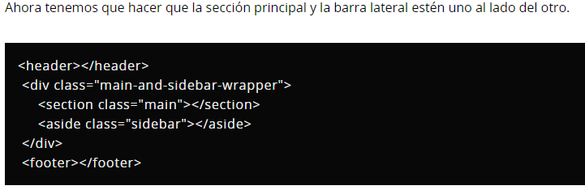
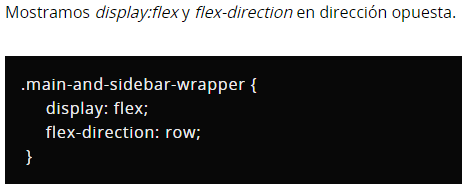

Flex Box, CSS Grid
Flexbox y Grid son dos mecanismos de CSS que resultan especialmente útiles de cara a la maquetación de
páginas web.
Comparamos sus principales funcionalidades en un primer vistazo, tenemos que reconocer que Grid puede hacer
cosas que Flexbox
no puede hacer y Flexbox puede hacer cosas que Grid no puede hacer. Con la ventaja de que ambos pueden
trabajar juntos: un elemento
de Grid puede ser un contenedor Flexbox y un elemento de Flexbox puede ser un contenedor de Grid.
En qué destaca Grid respecto a Flexbox
• Para diseños 2D (filas y columnas).
• CSS Grid es perfecto para construir una imagen más grande.
Hace que sea realmente fácil de manejar el diseño de la página e incluso puede manejar
diseños poco ortodoxos y asimétricos.
• Requiere menos intervención de consulta.
En qué destaca Flexbox respecto a Grid
- Flexbox es la mejor opción para alinear el contenido dentro de los elementos.
- Utiliza Flexbox para posicionar los detalles más pequeños de un diseño.
- Flexbox funciona mejor sólo en una dimensión (filas o columnas).
ejemplos


